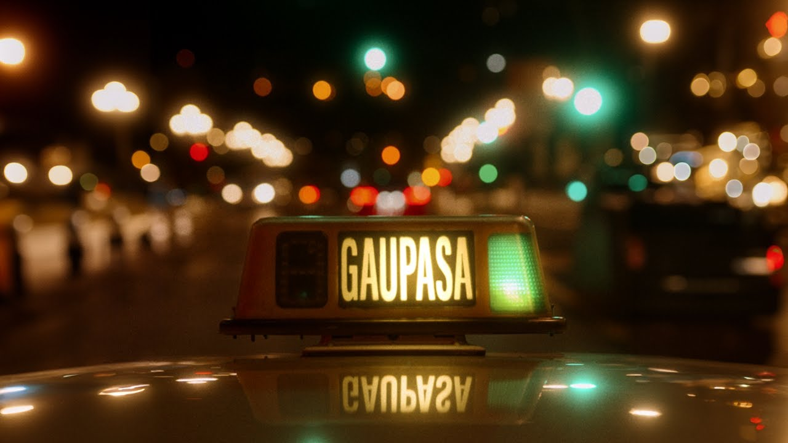
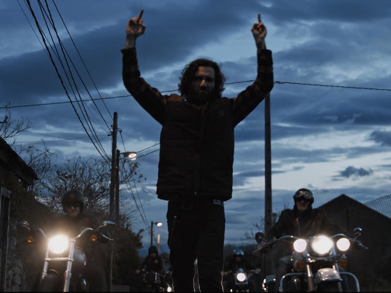
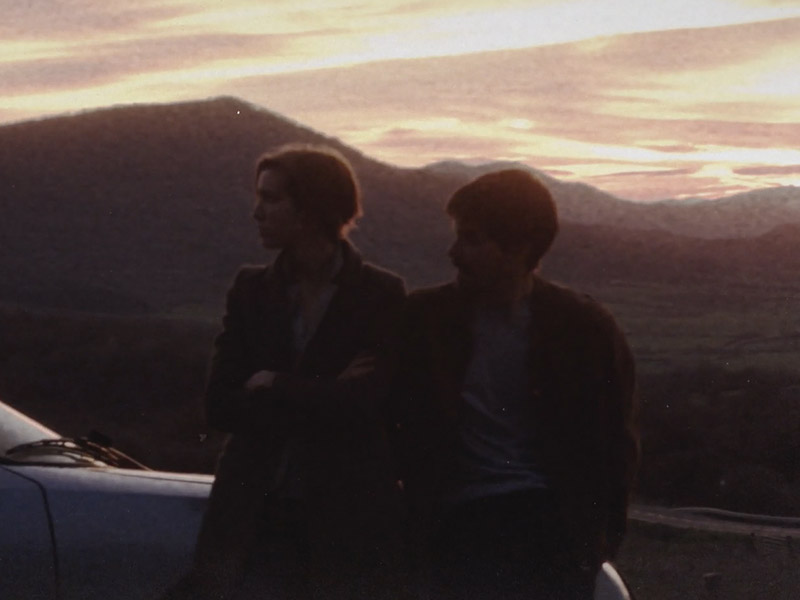
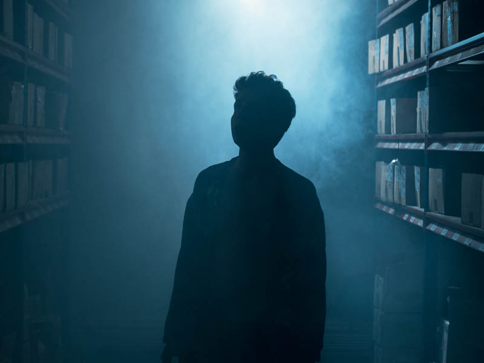
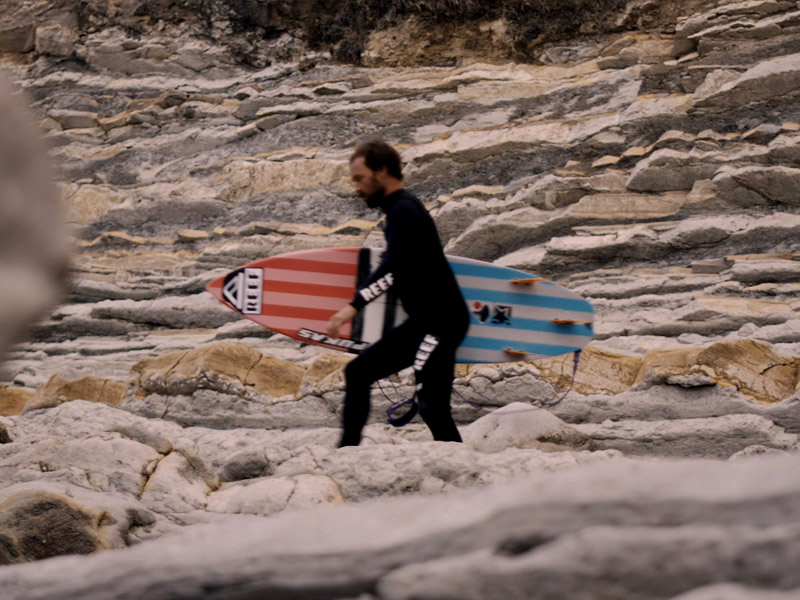
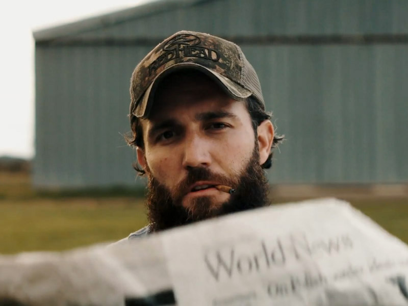
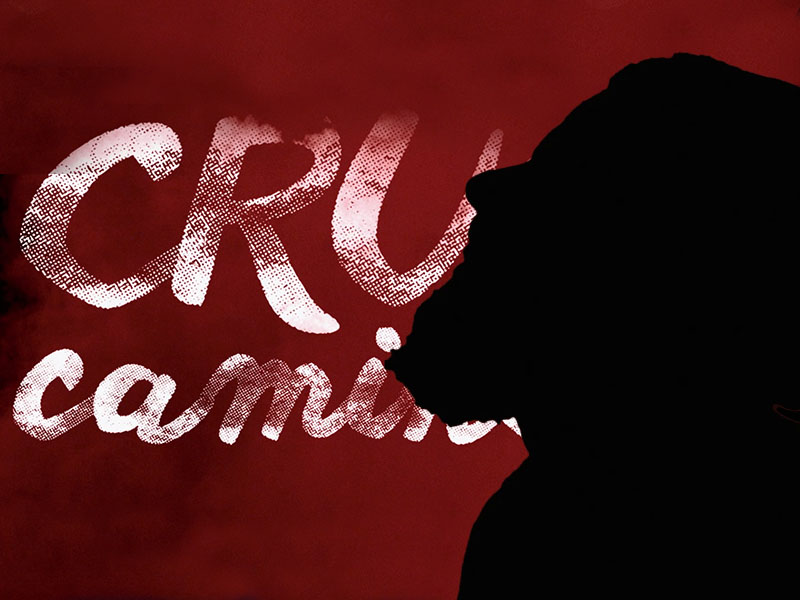
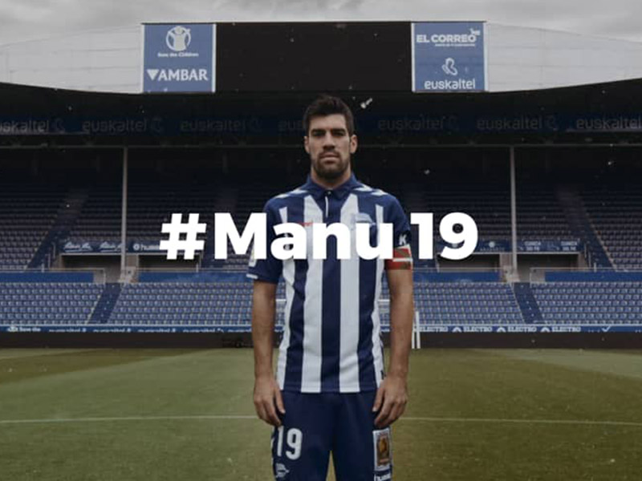

Stories to be told.
Filmmaker y DOP en Vitoria-Gasteiz.
-

Gaupasa
Kai Nakai
Álbum visual
-

Bedridden & Hellbound
Dead Bronco
Videoclip
-

Hacemos planes
La Regadera
Videoclip
-

Soy Rico
Dupla
Videoclip
-
Angela
Vídeo de moda
-

Tu aprobación
Skakeitan ft. Aspencat
Videoclip
-

ZAI
STR
Videoclip
-

Kolpe
Kai Nakai
Videoclip
-

Kepa Acero & Haizeacam
Storytelling
-

Big City Mama
Dead Bronco
Videoclip
-

Cruce de Caminos
Nómadas
Lyric video / Motion graphics
-

15K
Kai Nakai
Videoclip
-

Gasteiz Calling
Aftermovie
-

Erraiak
Documental
-

#Manu19
Alavés
Documental